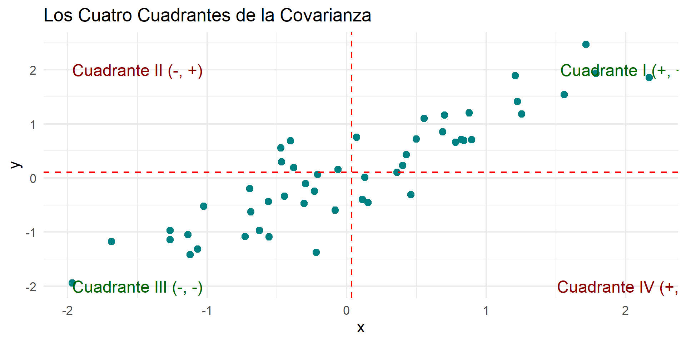
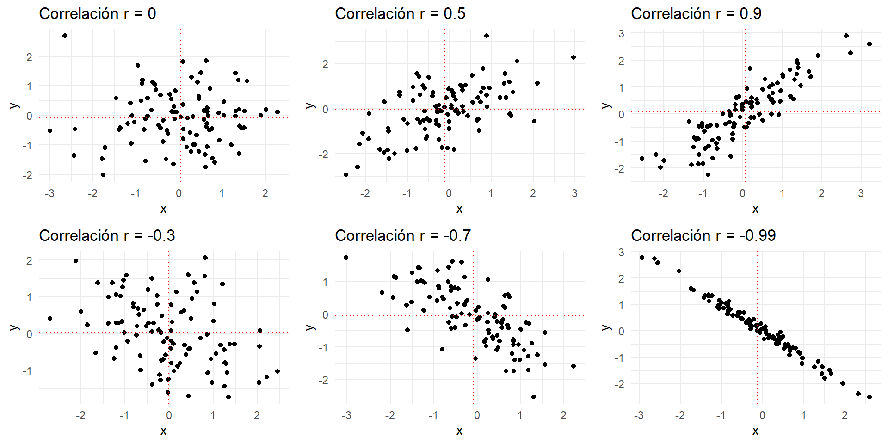
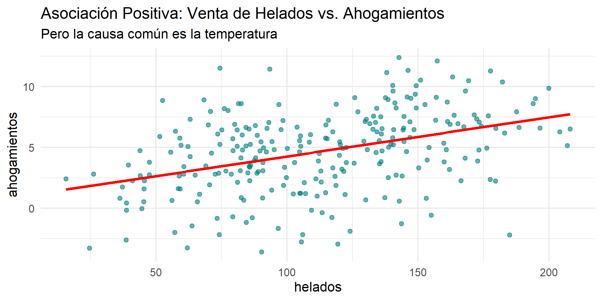
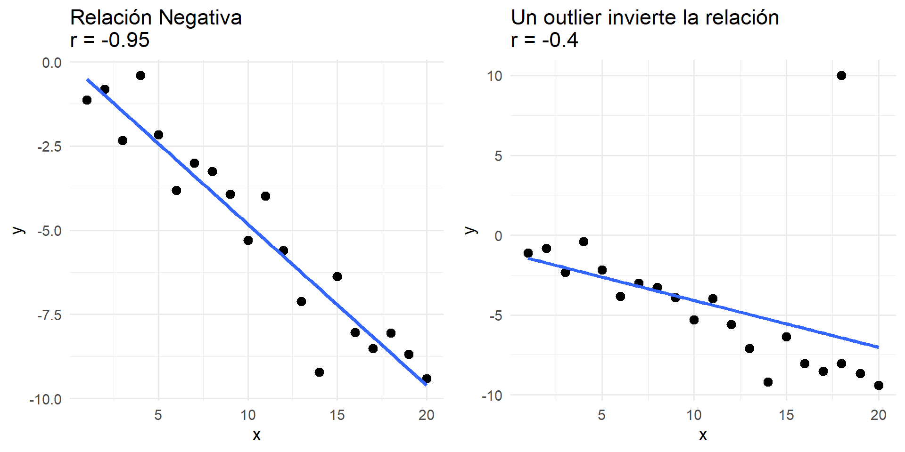
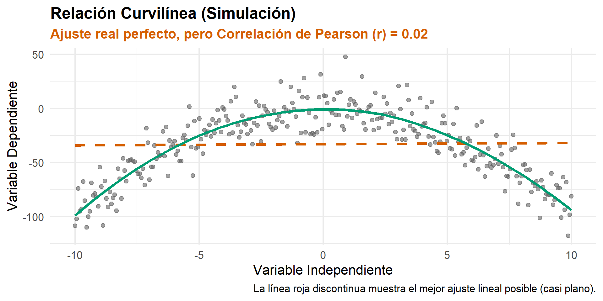

Síntesis Bivariada y Medidas de Asociación
Unidad 5: Estadística Descriptiva Bivariada
2025-11-24
Objetivos de la Sesión de Hoy
- Sintetizar las estrategias visuales para cada tipo de análisis bivariado.
- Introducir el coeficiente de Correlación de Pearson (r) para cuantificar la fuerza y dirección de una relación lineal.
- Desglosar el concepto de covarianza como el paso previo a la correlación.
- Discutir las limitaciones de la correlación (outliers, no linealidad, causalidad).
- Concluir el curso conectando la estadística descriptiva con la incertidumbre del muestreo y el rol de la probabilidad.
1. El Mapa del Análisis Bivariado: Síntesis Visual
Eligiendo la Herramienta Correcta
Hemos explorado tres tipos de relaciones. A modo de resumen, este es nuestro mapa conceptual para elegir la visualización y el análisis numérico correctos:
| Tipo de Relación | Pregunta Sociológica | Herramienta Visual (ggplot2) |
Herramienta Numérica |
|---|---|---|---|
| Cat ➞ Quant | ¿Difieren los grupos? | geom_boxplot, geom_density |
Tabla de medias/medianas por grupo |
| Cat ➞ Cat | ¿Se asocian las categorías? | geom_bar(position="fill") |
Tabla de contingencia (% cond.) |
| Quant ➞ Quant | ¿Cómo covarían las variables? | geom_point (Scatterplot) |
Correlación |
Hoy, nos enfocaremos en profundidad en el último caso: la relación entre dos variables cuantitativas.
2. Del Gráfico de Dispersión a la Correlación
El Gráfico de Dispersión (Scatterplot)
El gráfico de dispersión es nuestra herramienta visual principal para analizar la relación entre dos variables cuantitativas. Nos permite evaluar tres aspectos clave:
- Dirección: ¿La nube de puntos va hacia arriba o hacia abajo?
- Asociación Positiva: A medida que X aumenta, Y tiende a aumentar.
- Asociación Negativa: A medida que X aumenta, Y tiende a disminuir.
- Forma: ¿El patrón sigue una línea recta (lineal) o una curva (curvilíneo)?
- Fuerza: ¿Qué tan agrupados están los puntos alrededor del patrón principal? Puntos muy dispersos indican una relación débil; puntos muy juntos indican una relación fuerte.
Hacia una Medida Numérica: La Covarianza
Un gráfico de dispersión es subjetivo. Para cuantificar la relación, necesitamos un número. El primer paso es la covarianza.
La idea es dividir el gráfico en cuatro cuadrantes usando las medias de X e Y.

- Asociación Positiva: La mayoría de los puntos caen en los cuadrantes I y III.
- Asociación Negativa: La mayoría de los puntos caen en los cuadrantes II y IV.
La Covarianza (sxy)
La covarianza calcula el “promedio” del producto de las desviaciones de cada punto a sus respectivas medias.
\[ Cov(x, y) = s\_{xy} = \frac{\sum\_{i=1}^{n} (x_i - \bar{x})(y_i - \bar{y})}{n - 1} \]
- Interpretación del signo:
- Si Cov(x, y) > 0, la relación es positiva (puntos en cuadrantes I y III).
- Si Cov(x, y) < 0, la relación es negativa (puntos en cuadrantes II y IV).
- Problema: La magnitud de la covarianza depende de las unidades de las variables (ej.
pesos * años). ¡No es comparable! No nos dice si la relación es “fuerte” o “débil”.
La Solución: Correlación de Pearson (r)
Para resolver el problema de las unidades, estandarizamos la covarianza. La dividimos por el producto de las desviaciones estándar de cada variable. El resultado es el coeficiente de correlación de Pearson (r).
\[ r = \frac{Cov(x, y)}{s_x \cdot s_y} = \frac{1}{n-1} \sum\_{i=1}^{n} \left( \frac{x_i - \bar{x}}{s_x} \right) \left( \frac{y_i - \bar{y}}{s_y} \right) \]
- La fórmula de
res el promedio del producto de las puntuaciones Z de X e Y. res un número sin unidades, que siempre va de -1 a +1, lo que lo hace universalmente comparable.
Interpretando la Correlación (r)
- Rango: Siempre entre -1 y +1.
- Dirección:
- r > 0 indica una asociación positiva.
- r < 0 indica una asociación negativa.
- Fuerza: La magnitud (el valor absoluto).
- r cercano a 0: relación lineal débil o nula.
- r cercano a -1 o +1: relación lineal fuerte.
Interpretando la Correlación (r)

Características de la correlación (I)
- Simetría en las Variables: La correlación no distingue entre variables explicativas y respuesta; es indiferente cuál se llame x o y.
- Requisito Cuantitativo: Las dos variables deben ser cuantitativas para que los cálculos de la correlación tengan sentido. No se puede calcular la correlación entre una variable cuantitativa y una categórica.
- Independencia de Unidades: Como la correlación utiliza valores estandarizados, no cambia si se modifican las unidades de medida de las variables. La correlación es un valor sin unidades.
- Significado del Signo:
- Correlación positiva: Indica una asociación positiva entre las variables.
- Correlación negativa: Indica una asociación negativa.
- Correlación positiva: Indica una asociación positiva entre las variables.
Características de la correlación (II)
- Rango de la Correlación: La correlación siempre toma valores entre −1 y 1.
- Cercanía a 0: Indica una relación lineal débil.
- Cercanía a ±1: Indica una relación lineal fuerte. Un valor de ±1 indica una relación lineal perfecta.
- Limitación a Relaciones Lineales: La correlación sólo mide la fuerza de relaciones lineales, no describe adecuadamente las relaciones curvilíneas, aunque estas sean fuertes.
- Sensibilidad a Observaciones Atípicas: La correlación puede verse fuertemente afectada por valores atípicos, lo que puede distorsionar la percepción de la relación entre las variables. Es importante utilizar la correlación con precaución cuando se detectan atípicos.
3. Advertencias sobre la Correlación
1. Correlación no implica Causalidad
Una correlación fuerte entre dos variables nunca es, por sí sola, evidencia suficiente para concluir que una causa la otra.
La relación podría ser una asociación espuria, causada por una tercera variable latente.

2. La Correlación es Sensible a Outliers
Al igual que la media y la desviación estándar, la correlación es una medida no robusta. Un solo valor atípico puede distorsionar dramáticamente el coeficiente.

Lección: Siempre inspecciona visualmente tu gráfico de dispersión para detectar outliers antes de interpretar r.
3. r Solo Mide Relaciones LINEALES
El coeficiente de correlación de Pearson está diseñado para medir qué tan bien se ajustan los datos a una línea recta. Si la relación es fuerte pero curvilínea, r puede ser engañosamente bajo.

Conclusión: Un r cercano a 0 no significa “ausencia de relación”. Significa “ausencia de relación lineal”. Por eso, el análisis visual es irremplazable.
4. Conclusión del Curso
Más Allá de lo Descriptivo: Incertidumbre y Probabilidad
En este curso hemos aprendiendo a describir los patrones que vemos en nuestros datos. Pero casi siempre, estos datos provienen de una muestra.
Esto nos deja con la pregunta muy importante en estadística y para los resultados de nuestras investigaciones:
“En nuestra muestra de la ENUT, encontramos que las mujeres dedican, en promedio, 2.1 horas más de trabajo no remunerado que los hombres. ¿Qué tan seguros podemos estar de que esta diferencia no es solo una casualidad producto del azar del muestreo? ¿Podemos generalizar o inferir que esta brecha existe en toda la población chilena?”
Responder esta pregunta no es posible usando solo estadística descriptiva.
El Puente a la Estadística Inferencial
El Problema: La incertidumbre del muestreo. Cada muestra que saquemos será ligeramente diferente, y nuestros estadísticos (media, correlación, etc.) variarán de muestra en muestra.
La Solución: La Teoría de la Probabilidad. La probabilidad es la herramienta matemática que nos permite cuantificar la incertidumbre. Nos permite decir qué tan “probable” es que un resultado observado en una muestra ocurra por pura casualidad.
El Siguiente Paso: Al combinar nuestros estadísticos descriptivos con la probabilidad, podemos hacer inferencia estadística: sacar conclusiones sobre la población a partir de la muestra, y cuantificar nuestra confianza en esas conclusiones (ej. p-valores, intervalos de confianza).
Lo que han aprendido en este curso es el fundamento indispensable para poder hacer inferencia de manera rigurosa y crítica.
Cierre y Próximos Pasos
Resumen de la sesión de hoy:
- Hemos sintetizado las estrategias visuales y numéricas para los tres tipos de análisis bivariado.
- El coeficiente de correlación (r) cuantifica la fuerza y dirección de una relación lineal, pero tiene importantes limitaciones.
- La estadística descriptiva es el primer paso, y la probabilidad es el puente hacia la estadística inferencial.
En el práctico de hoy:
- Aplicarán estas técnicas para crear gráficos de dispersión, calcular correlaciones e interpretar los resultados en el contexto de sus limitaciones.